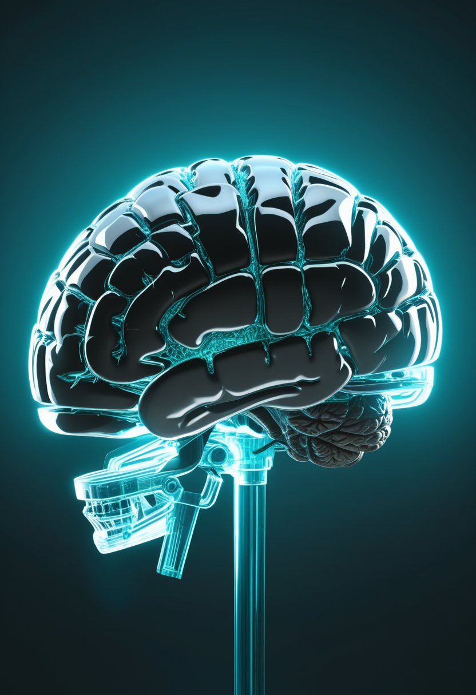
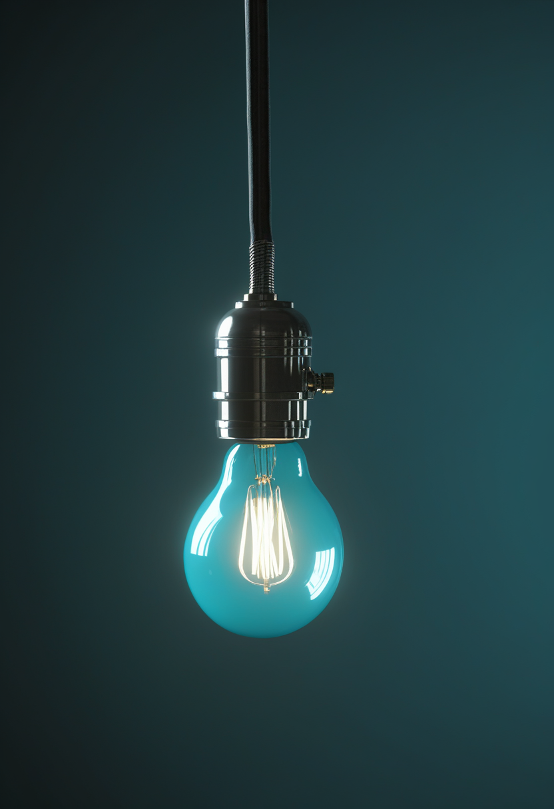
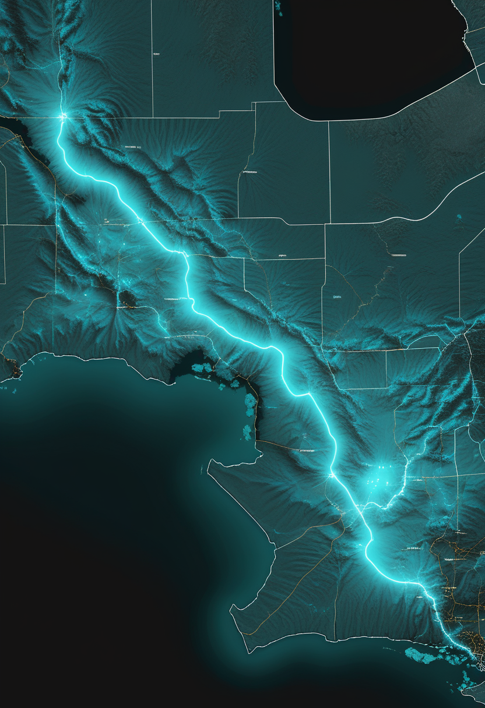
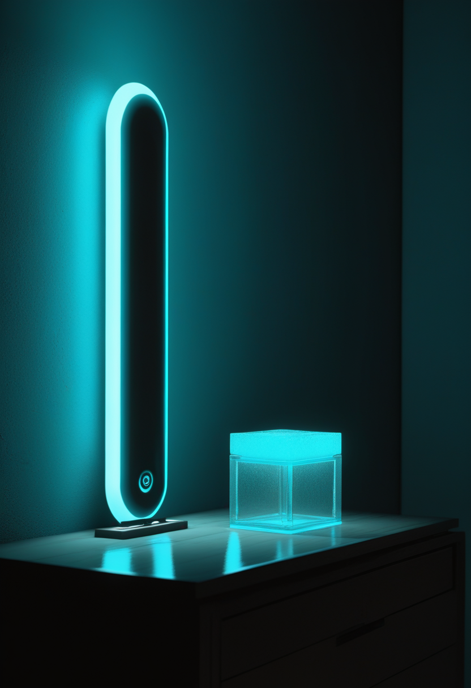

水曜日の便り。ナイジェリアでウガンダ帰国者のエボラ感染が確定し、同国で初めての症例になった。接触者44人を追跡中で、感染経路は調査が続く。同じ週、ケニアは1例目の接触者が陽性となり累計9例に達し、保健局長の『一つの集団』説明に病理医が異議を唱えた。基盤の章ではこれに加え、DRCの確定例が出典により9,277〜9,552例・死亡4,478〜4,602人の幅で推移していること、鳥インフルエンザがヒトで新規3件にとどまることを届ける。自由の章ではNature Neuroscienceの神経技術特集と、ParadromicsとSiemens Healthineersの画像基盤提携、湖北省がBCI臨床研究の中国最大集群になったことを。畏敬の章ではQuantinuumが論理忠実度99.9995%を主張したことと、ウェッブ宇宙望遠鏡が誕生から数日の超新星を捉えた可能性、木星の磁気円盤が波打っていたという発見を。命の章ではリスジプラムによる上肢機能改善の小規模研究と、アピテグロマブの欧州再申請を。美の章では、2,100年前の難破船から『キケロの注文通り』の高級食器が引き揚げられたことと、AIの道徳的地位は意識を前提にすべきかという論争の広がりを取り上げる。
ナイジェリア保健相ムハンマド・アリ・パテ氏は10月20日、首都アブジャでウガンダから帰国した女性のエボラ感染を確定したと発表した。女性は10月7日に発症し11日に私立病院へ入院、ウガンダは8月27日に終息宣言済みで感染経路は調査中(要確認)。連邦保健省・NCDC・WHO・アフリカCDCが合同で接触者44人(医療従事者・患者・付き添い・同乗者)を追跡しており、市中感染は確認されていない。同じ週、ケニアでは1例目の接触者だった24歳男性が9例目として確認され、保健局長は『一つの集団』に留まるとする一方、病理医アーメド・カレビ氏は感染経路の説明に異議を唱えた。東アフリカの流行が、単発とはいえ西アフリカの人口大国にまで届いたことが、今日最大の変化である。
SMA News Todayは10月19日、中国の15人のSMA患者を対象にした小規模研究を紹介した。リスジプラム(エブリスディ)投与下で全体の運動機能は安定し、上肢機能の改善と関連していたという。対象が15人・単一地域の報告にとどまり、一般化には慎重さが要る。
筋を標的にする初の承認薬アピテグロマブは9月11日に米FDAの承認を受けた。2歳以上でSMN2標的治療との併用、4週ごとの点滴投与で、第3相SAPPHIREでは52週時点のHFMSEがプラセボ比平均2.2点改善している(非歩行の2型・3型が対象)。欧州は8月に製造所のGMP不適合で申請を取り下げていたが、10月8日にEMAへ再提出し、CHMP意見は2027年前半を見込む。Scholar Rockは11月10日に第3四半期決算を発表予定。
新薬は筋そのものを守る方向へ広がり続けているが、今日の進展は小規模研究と欧州の手続き的な再申請が中心で、臨床判断を変えるほどの新情報ではない。
Nature Neuroscience10月号は、脳コンピューター接続(BCI)を中心に神経技術の多様な研究を特集した。巻頭論説は、神経技術が『神経系が情報をどう表現するか』という知見を借りて機器を設計し、その機器がまた知見を検証・改良するという独特の往復関係にあると論じている。

埋め込み型BCIを手がけるParadromicsが、患者評価・手術計画・成果追跡のためのマルチモーダル画像プラットフォーム構築でSiemens Healthineersと提携したと発表した。個々の脳の構造をより正確に捉え、電極の配置精度を高めることが狙い。同社は10月8日にも前臨床で4年超の安定記録を発表している。
武漢を中心とする湖北省のBCI臨床試験が中国最大規模の集群となり、参加企業の6割超が省外によるものと報じられた。湖北省は侵入型BCIの医療サービス価格を全国で初めて定めるなど、制度面の整備でも先行している。

10月20日の論評記事は、実験的な脳インプラントの試験が増える一方、豪州には試験終了後に参加者の機器や保守を長期に支える規則がないと指摘した。Synchronが豪州で血管内デバイスの新しい試験を始めたことにも触れ、埋め込み型BCIが研究から医療へ移る局面で、撤退時の責任という論点が前面に出てきたとする。
商用化の体制づくりと臨床集積の両方で前進が続く一方、試験が終わった後に参加者をどう支えるかという制度の穴が今週も指摘された。性能が実用域に近づくほど、この穴の重みは増す。視線入力の新規ニュースは今回も取得できなかった。

ナイジェリア保健相ムハンマド・アリ・パテ氏は10月20日、首都アブジャでウガンダから帰国した女性のエボラ感染を確定したと発表した。女性は10月7日に発症し11日に私立病院へ入院、連邦保健省・NCDC・WHO・アフリカCDCが合同で接触者44人(医療従事者・患者・付き添い・関係便の乗客)を追跡している。ウガンダは8月27日に終息宣言済みで、感染経路は調査待ち(要確認)。輸入1例のみで市中感染は確認されていない。NCDCは10月6日の時点で輸入リスクの警告を出していた。
ケニア保健省は10月20日、隔離中だった24歳男性の陽性を確認し9例目とした。1例目(10月5日にナイロビで死亡)の近親者で、発症の兆候が出た時点で既に隔離されていた。保健局長パトリック・アモス氏は『9例すべてが一つの集団に属し、集団外への伝播の証拠はない』とし、接触者135人中134人を追跡・隔離済みとした。病理医アーメド・カレビ氏は『同じ集団に属することは、全員が1例目から直接感染したことを意味しない』と感染経路の説明に疑問を呈し、米国はケニアへの渡航再考を勧告している。
DRCの数値は出典と基準日で食い違ったままだ。ECDCは10月18日までのデータで確定9,552例・死亡4,602人、米CDCは10月18日時点で9,455例・4,561人、蘭RIVMは10月19日時点で9,277例・4,478人としている。米CDCはこれを記録上2番目に大きいエボラ流行とし、ECDCはDRC報告値が継続的な精査・整合化の途上にあると注記している。5月17日に宣言されたPHEICは継続中。
FAOの更新(10月上旬)は、8月27日以降に25の国・地域で動物の高病原性鳥インフルエンザ624件、ヒトの新規事例3件(H5N1が1件、H9N2が2件)を報告した。WHOのH5N1累計は25か国で1,000例・死亡479人・致死率47.9%(7月7日まで)。持続的なヒト-ヒト感染は報告されておらず、WHOは公衆衛生上のリスクを引き続き低いと評価している。
ナイジェリアの初例は、東アフリカの流行が人口大国へ届いたという越境そのものが焦点になる。ケニアは封じ込めが効いている証拠と、経路の説明が追いついていない疑いが同時に成り立つ段階にあり、DRCの数値は基準日とともに扱うのが安全だ。
Quantinuumは10月19日、Helios上で『カラーコード』を用い論理忠実度99.9995%を達成したと発表した。100万操作あたり5誤りに相当し、9月の自社記録から誤り率を10分の1にしたとする。2029年までの誤り耐性機Apolloにつなげる位置づけだが、企業発表であり第三者検証は未確認。前号の理研のシリコンスピン5量子ビット約99.9%とは、論理忠実度と物理ゲート忠実度・イオントラップとシリコンスピンという指標と方式が異なり、直接比較はできない。
AT 2026abckは赤方偏移約5.0の星形成銀河に出現した超新星で、爆発後およそ4〜10日という早い段階で捉えられたとみられる。重力レンズによる増光なしで見つかった点が珍しく、約2か月ごとに再観測するNEXUSサーベイが発見した(査読前論文)。初期宇宙の超新星をこれほど早期に捉えた例は少ない。
これまで滑らかな円盤と考えられてきた木星の電流シートが、数分から1時間超の波状の揺らぎを持つことを、山東大学主導チームがJunoの観測データから示した。揺らぎは経度約100度にわたる小さな磁気リコネクションと結びついており、Science China Earth Sciencesに掲載された。
ハッブル宇宙望遠鏡の保管データからニオブなどの化学指標が見つかり、星の誕生ではなく死に由来する物質から形成された惑星の候補が初めて示された(10月5日)。白色矮星の周囲という環境での発見で、惑星形成の時期に関する従来の前提を問う内容になっている。

NEJM(10月14日)は、インスリンを使っていない2型糖尿病の成人を対象にした試験CONNECTで、持続血糖モニタリング(Dexcom G7)を行った群のHbA1cが26週で8.8%から7.2%へ下がり、通常ケア群の低下を上回ったと報告した(Dexcom出資)。インスリン非使用の2型糖尿病でもCGMの対象を広げる根拠になるかが注目点。
量子は『誰が一番か』より『指標が何か』を見る段階に入った。Quantinuumの数字は企業発表で査読を待つ必要があり、宇宙では初期宇宙の超新星から木星の磁気円盤、星の死に由来する惑星候補まで、観測技術の向上が新しい前提を問い続けている。
トルコ・アンタルヤ県アドラサン沖の水深42〜55メートルで発掘が続く難破船から、魚皿やスープ鉢など、木箱に生の粘土で仕切られ保存された高級食器が多数引き揚げられた。船体のコインから紀元前1世紀半ばと推定され、食器の多くはハタイ県アルスズ(古代ロショス)産とみられる。キケロが紀元前50年に友人アッティクスへ宛てた書簡で、ロショスへ食器を注文したと記していたことから、発見は『キケロの注文』を連想させると報じられた。発表は9月28日で、積み荷はアルスズからローマへ向かう途中で座礁した可能性があるという。
Frontiers in AI論文(9月上旬)は、動物福祉の『五つの自由』を意識あるAIに適用する枠組みを示し、競合する意識理論には中立を保つ。これに対しDorsch論文(2026)は、人工システムは苦しむ必要も脆弱性を備える必要もなく道徳的配慮の対象になり得るとし、意識を迂回する別の経路を示した。世論調査では、米国人の20%が現行AIは既に感覚を持つと考え、38%が感覚あるAIへの法的権利を支持、69%が感覚あるAIの開発禁止を支持する一方、ヒトと区別できないAIへの意識の帰属はおおむね『アリ程度』にとどまるという。
MIT Technology Reviewは、脳の凍結保存、生体脳の拡張、記憶のクラウドへのアップロードなど6つの道筋を取り上げ、それぞれの実現性と、完全な『認知的不死』に至らなくても今の研究から何が得られるかを検証した。実用化にはいずれも遠く、現時点の研究が副産物として医療や神経科学にもたらす価値に焦点を当てている。
伴侶AIとの親密な関係は積み重なり予測しにくく、技術的な不具合で途切れると利用者は現実の喪失として体験すると報告する研究が、14,081件の不具合記録を分類して倫理的な設計指針を検討した(査読前、学会発表予定)。人格を模すAIの設計責任を問う流れの一つで、AIが意識を持つかという論争とは別に、依存する人間側に実際に生じる損失を扱っている。
2,100年前の難破船は、注文通りに届くはずだった荷が海の底で時を止めた記録だ。一方でAIの『意識』と『道徳的地位』をめぐる論争は前提そのものが割れ、依存する人間側に生じる実際の喪失だけが先に実証され始めている。
水曜日の便り。ナイジェリアでウガンダ帰国者のエボラ感染が確定し、同国で初めての症例になった。同じ週、ケニアは1例目の接触者が陽性となり累計9例に達し、保健局長の『一つの集団』説明に病理医が異議を唱えた。基盤の章ではこれに加え、DRCの確定例が出典により9,277〜9,552例の幅で推移していること、鳥インフルエンザがヒトで新規3件にとどまることを届けた。自由の章では、Nature Neuroscienceの神経技術特集と、ParadromicsとSiemens Healthineersの画像基盤提携、湖北省が中国最大のBCI臨床研究集群になったことを伝えた。畏敬の章では、Quantinuumが論理忠実度99.9995%を主張したことと、ウェッブ宇宙望遠鏡が誕生から数日の超新星を捉えた可能性、木星の磁気円盤が波打っていたという発見を取り上げた。命の章では、リスジプラムによる上肢機能改善の小規模研究と、アピテグロマブの欧州再申請を届けた。美の章では、2,100年前の難破船から引き揚げられた『キケロの注文通り』の高級食器と、AIの道徳的地位は意識を前提にすべきかという論争の広がりを伝えた。
では、また明日の朝に。 — JaH